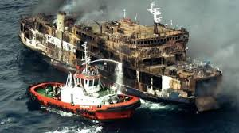

THE DOÑA PAZ FERRY DISASTER
In the days leading up to Christmas 1987, the MV Doña Paz, a Philippine-registered passenger ferry, was traveling from Leyte to Manila. As was common during the holiday season in the Philippines, the vessel was dangerously overcrowded. While the official passenger manifest listed roughly 1,500 people, an estimated 4,000 to 4,300 passengers were actually crammed into the ship, sleeping in hallways and sharing cots. On the night of December 20, as the ferry navigated the dark waters of the Tablas Strait, the conditions were ripe for catastrophe: the ferry’s radio was reportedly unmonitored, the bridge was allegedly left to an apprentice, and the life jackets were locked away.

The Sea of Fire: At approximately 10:30 PM, the Doña Paz collided with the MT Vector, an oil tanker carrying 8,800 barrels of gasoline and petroleum products. The impact sparked a massive explosion that instantly turned the tanker into an inferno. The fire spread rapidly across the surface of the sea, surrounding both ships with a ring of burning oil. Panicked passengers were forced to choose between staying on a burning, sinking ship or jumping into the flaming, shark-infested waters of the strait. Because the lights had failed almost immediately, thousands were trapped in the pitch-black lower decks as the ship sank. Out of the thousands aboard, only 26 people survived the fire and the subsequent hours in the water.
The Standardization Strategy: This crash forced a global aviation strategy shift toward the Standardization of Degrees. All flight plans were mandated to use four digits (e.g., 027.0) or specific notations to ensure a 243-degree error could never happen again due to a simple decimal misunderstanding.
The Heavy Toll: With an estimated death toll of 4,386, the sinking of the Doña Paz is the deadliest peacetime maritime disaster in history. The tragedy exposed a shocking level of negligence: the MT Vector was operating without a license or a lookout, and the Doña Paz was carrying nearly triple its allowed capacity. The disaster remains a deeply painful chapter in Philippine history, particularly as it occurred during a time of celebration, wiping out entire families who were traveling home for the holidays.
Key Facts
Date: December 20, 1987
Location: Tablas Strait, Philippines (near Mindoro)
Casualties: Estimated 4,386 dead (only 26 survivors)
Cause: A collision between a severely overcrowded ferry and an unseaworthy oil tanker, resulting in a massive petroleum fire that engulfed both ships and the surrounding water.
The Doña Paz disaster served as a horrific global warning about the consequences of prioritizing profit over safety and the failure of maritime oversight. It led to a total overhaul of the Philippine Coast Guard’s regulatory powers and much stricter enforcement of passenger manifests and vessel licensing. It remains the primary case study for maritime safety in Southeast Asia, highlighting the absolute necessity of functional communication equipment, accessible life-saving gear, and the strict prevention of overcrowding.